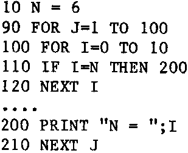

INMC 80 News |
October–December 1981 · Issue 5 |
| Page 65 of 71 |
|---|
The controversy over the GOTO has been raging for some years now (GOTO Statement considered Harmful, Dijkstra, E.W., CACM, Vol 11, No.3. Mar 1968 and other papers) and it would be wrong to go very deeply into the depths of the dispute here. As careless use of the GOTO in BASIC can lead to an utterly incomprehensible program, I think no one will support its indiscriminate use towards that end. Use of the GOTO can cause problems in BASIC which can be very difficult to find.
For example, consider the following program:

At line 210 one will get an NF error. The program has jumped out of the FOR I loop, and now meets a statement NEXT J. But it is in an T loop, so it can’t cope. The answer is to force the closure of the I Loop thus:
110 IF I=N THEN II=I:I=10:NEXT I:I=II:GOTO 200
This form of error only occurs when jumping from an inner loop to the outer one and can be overcome as illustrated. When jumping out of a single non nested loop, a plain GOTO is often considered sufficient – “It doesn’t give any errors”, I hear a chorus. Each time such an abnormal exit is made from a loop there is housekeeping space allocated on the BASIC’s stack – and there is only space for a number of loops. I have not heard of anyone running out of space, but they probably wouldn’t boast about it! The space for the number of nested FOR loops is limited, and it is bad practise to waste it – as after all, someday you might need 20 or 30 nested FOR loops!
The controversy surrounding the GOTO is particularly strong in those areas where writers of compilers with variables of limited scope forgather (as opposed to BASIC, where most variables have global scope). Because of the limited scope in the variable structures of languages such as Pascal, there is much more housekeeping associated with subroutine calling, and the GOTO (or in Pascal the Label/goto) causes havoc with this housekeeping information. So it is perhaps easier to outlaw the use of the GOTO in such languages. It is nevertheless one of the fundamental commands of BASIC, so we need feel no compunction about using it, but should do so wisely.
Always keep a tape of the fully commented (or REMed) final listing, in its full uncompressed form. If you have a friend with a Nascom and printer, it may be possible to arrange that you bring over your library copies of tapes, and get a listing off them. File your listings carefully. If you can get two listings, so much the better. Use one for planning improvements, and leave the other alone in the shelf. Make sure that you put a date and version number on each – a REM or comment at the start is the best way.
| Page 65 of 71 |
|---|